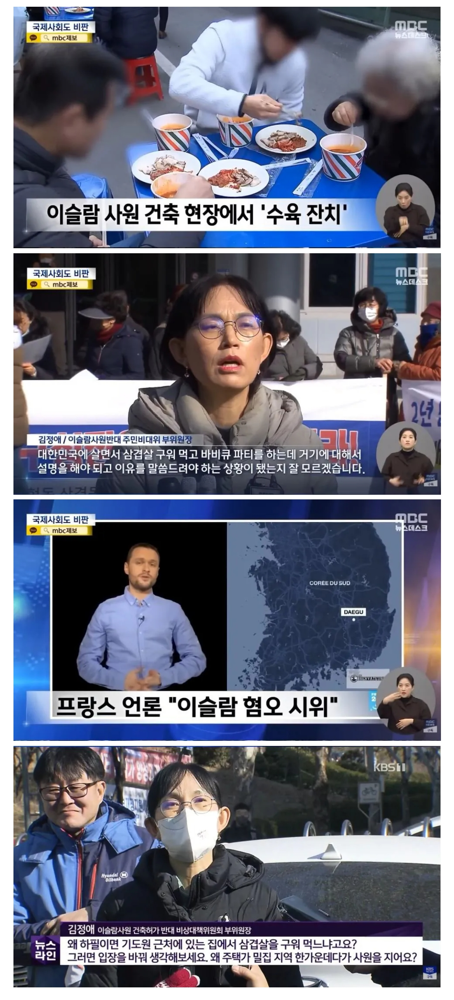

대구 이슬람 사원 반대시위
댓글
그런 애들 보고 아닌 애들까지 믿고 받아줬다 개븅신됨. 항상 문제가 되는 것은 극소수임. 근데 그 극소수가 나중엔 다수를 통제하게 됨.
부위원장님 롸끈하시네
이슬람은 체계임 그중에 하나가 종교고
절대 안돼! 여자 때리는 때 시 도 학교에서 가르치는 곳임
왜이렇게 이슬람새끼들 빨아주는지 모르겠네 ㅋㅋㅋ
남의나라에서 무함마드 풍자한걸로 선생을 참수하고
동시다발적으로 인질테러 벌이는 새끼들이 어딧겠냐 ㄹㅇㅋㅋㅋ
무슬림 이민자들을 위해서 사원을 지어줄 이유가 없음 저게 시작이지 나중에는 더한 권리를 요구함